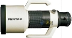

器材
党
全部器材
产品年表
名词百科
榜单
器材库
> 120中幅镜头 > 645 A* 600/5.6 ED IF

宾得
645 A* 600/5.6 ED IF
4.92
综合评分
分类
120中幅镜头
点评
1 条
图片
0 张
评测
0 篇
645 A* 600/5.6 ED IF
产品类型
120中幅镜头
综合评分
4.92分
无忌评测
暂无评测
规格参数
网友点评
(1)
产品图 / 样片
(0)
评测文章
(0)
详细规格
发布日期
1986-06
焦距
600mm
最大光圈
f/5.6
最小光圈
f/45
视角（对角）
6.6
镜头结构
12片/11组
最近对焦距离
500cm
滤镜口径
49mm
镜头卡口
P645A
颜色
黑色
尺寸
155.5X352.5mm
重量
4800g
笨泥
2010-09-17 08:10
4.92 分
操作性 4.50
耐用性 5.00
性价比 5.00
解像力 5.00
色彩还原 5.00
机械结构 5.00
总评
C/P高，色彩還極佳
优点
C/P高，色彩還極佳
缺点
重
该产品暂无存档的产品图
评测 / 相关文章
该产品暂无存档的评测文章